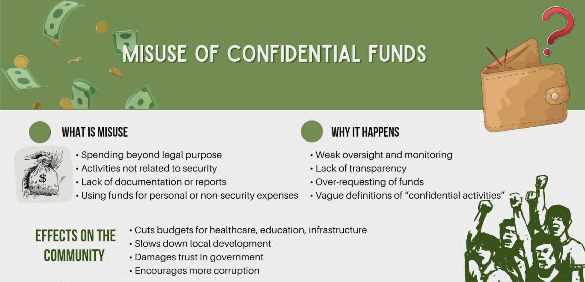

Infographics, Videos, and Visual Materials
This section provides helpful learning materials that explain corruption, confidential funds, and responsible governance.

These materials can help deepen understanding and increase public awareness.